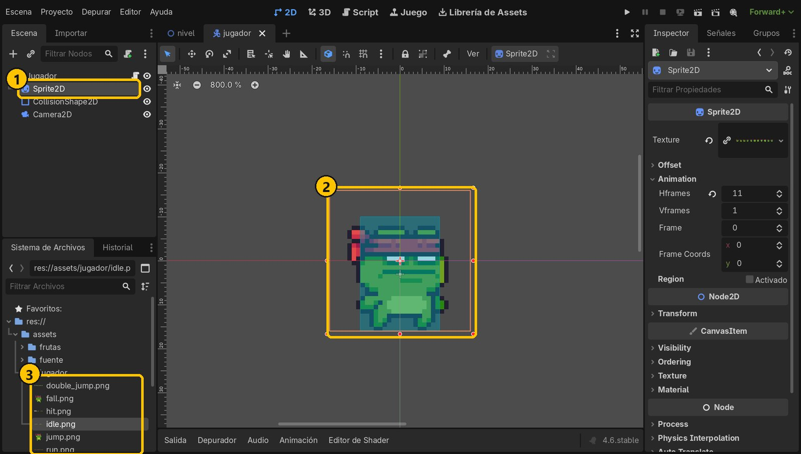
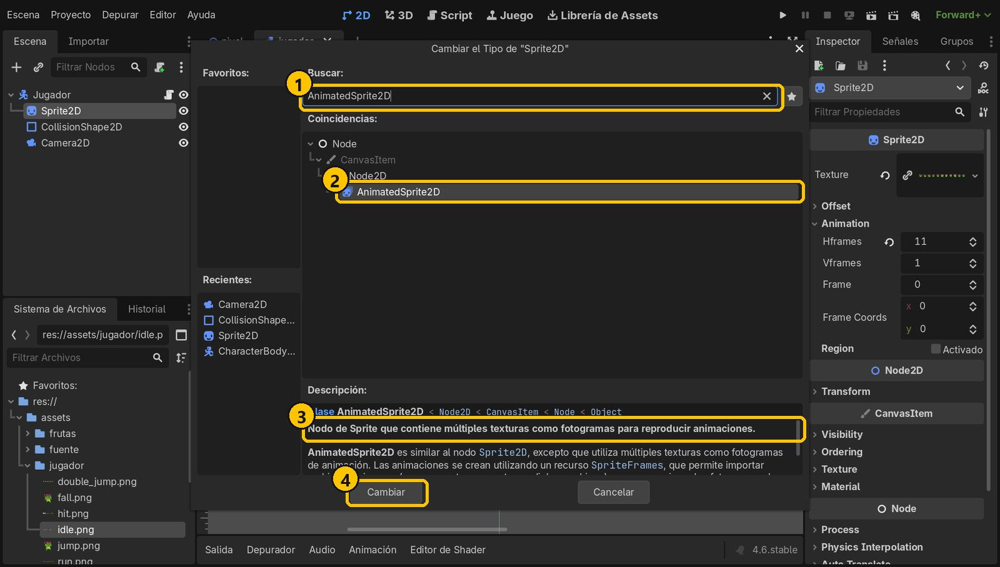
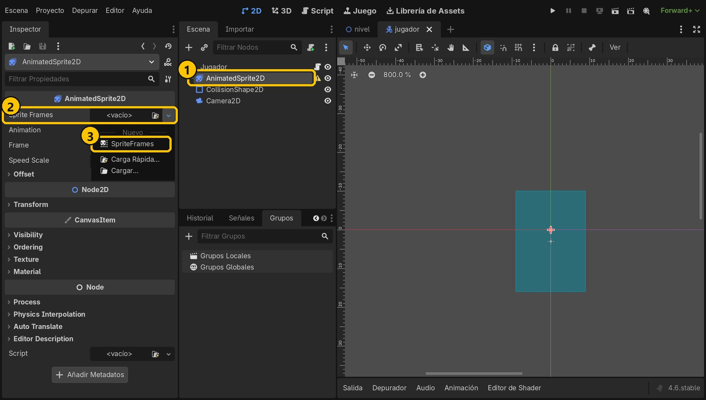
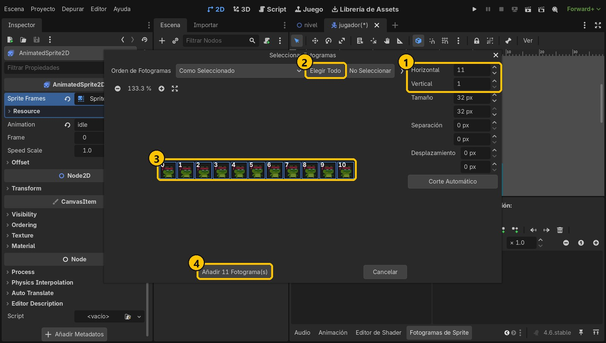
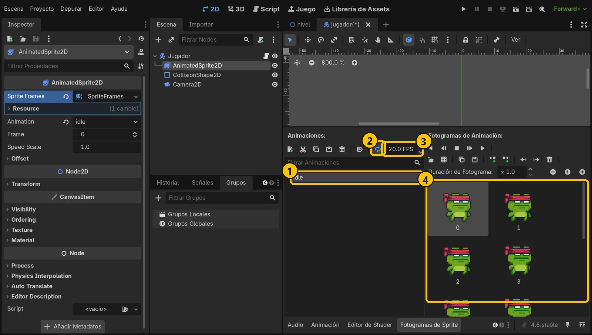
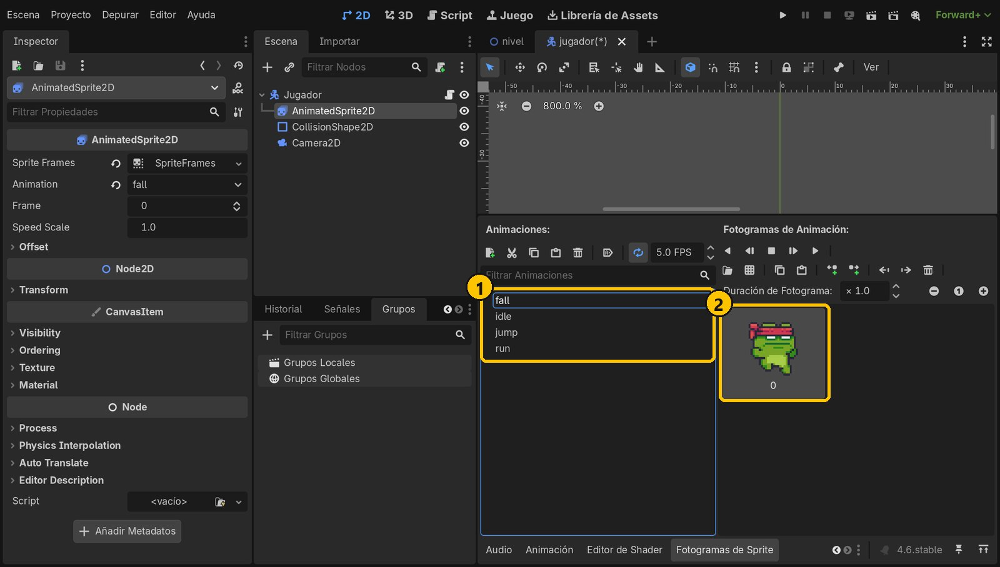
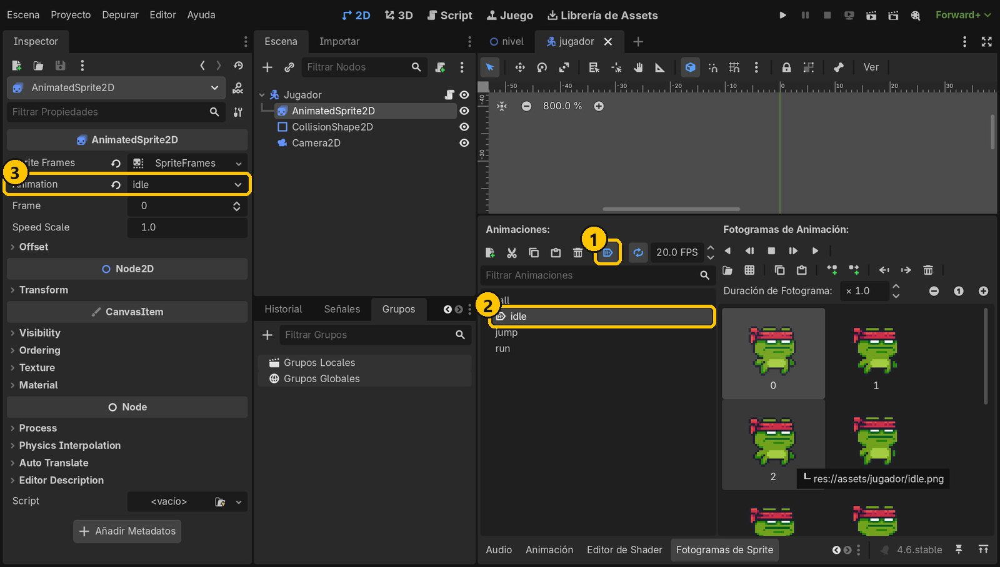
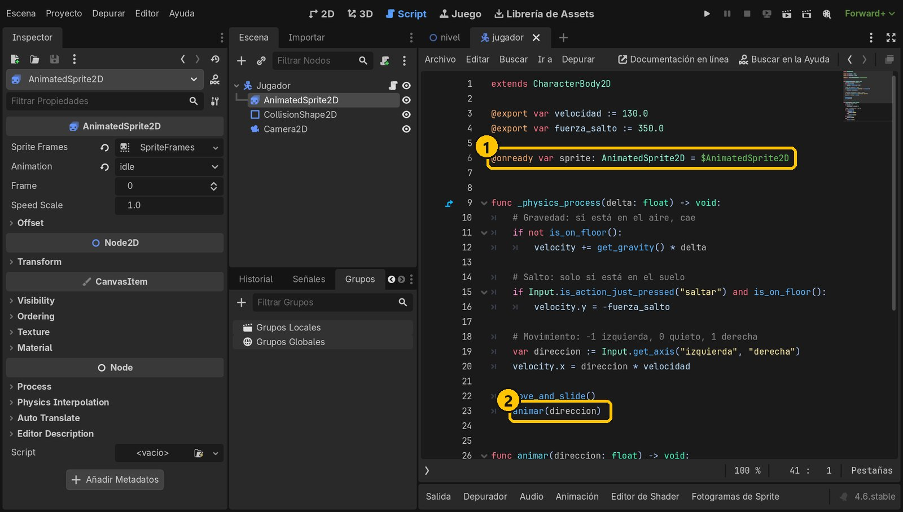
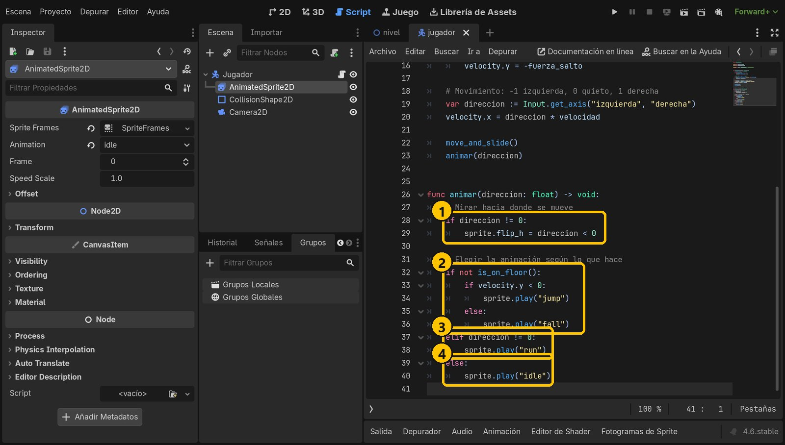
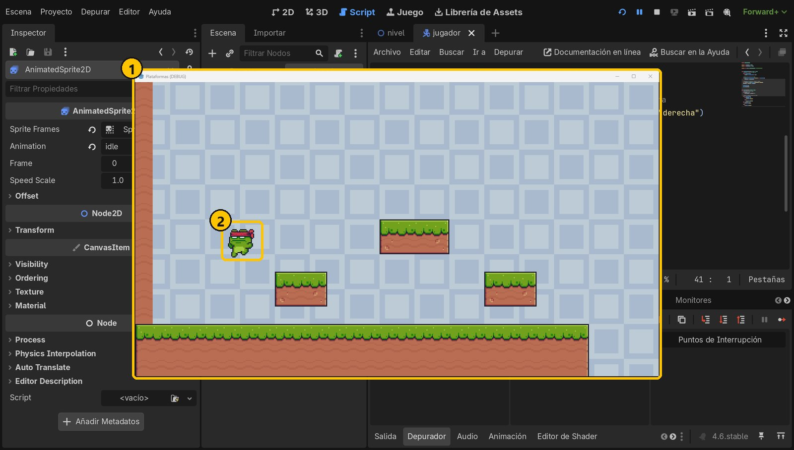

Objetivo
Al terminar, la rana estará quieta respirando (idle), correrá al moverse (run), cambiará de dibujo al saltar (jump) y al caer (fall), y mirará siempre hacia donde va.
Partimos de: El proyecto del tutorial 1: la escena jugador.tscn con un Sprite2D que solo muestra un dibujo, y el script jugador.gd que ya mueve y hace saltar a la rana.
Nodos y conceptos
AnimatedSprite2DComo un Sprite2D, pero con varias animaciones, cada una hecha de varios dibujos (fotogramas) que se van turnando.
SpriteFramesRecurso que guarda las animaciones: su nombre, sus fotogramas, su velocidad (FPS) y si se repiten en bucle.
Hoja de spritesUna imagen con todos los fotogramas en fila. Godot la corta en trozos iguales (aquí, de 32 × 32 píxeles).
play("nombre")Reproduce esa animación. Si ya se está reproduciendo, la deja seguir: por eso podemos llamarlo en cada fotograma.
flip_hDa la vuelta al dibujo en horizontal: con él la rana mira a la izquierda sin necesitar otra hoja de sprites.
Paso a paso
1Punto de partida
Abre jugador.tscn. El Sprite2D solo enseña un dibujo de la tira idle.png. En assets/jugador están también run.png, jump.png y fall.png.

- 1Sprite2D: un dibujo
- 2Siempre igual
- 3Más dibujos
2Cambia el tipo a AnimatedSprite2D
Haz clic derecho en Sprite2D → Cambiar Tipo…, busca AnimatedSprite2D y pulsa Cambiar. Después renómbralo a AnimatedSprite2D (F2), porque así lo llamaremos en el código.

- 1AnimatedSprite2D
- 2El nuevo tipo
- 3Fotogramas
- 4Cambiar
3Crea un SpriteFrames
En el Inspector, abre el desplegable de Sprite Frames y elige Nuevo SpriteFrames. Haz clic sobre él: abajo se abre el panel Fotogramas de Sprite.

- 1AnimatedSprite2D
- 2Sprite Frames
- 3Nuevo SpriteFrames
4Animación idle desde la hoja
Renombra la animación default a idle (doble clic). Pulsa Añadir fotogramas desde una hoja de sprites (icono de cuadrícula) y elige idle.png. Pon Horizontal 11 y Vertical 1, pulsa Elegir Todo y Añadir 11 Fotograma(s).

- 111 × 1
- 2Elegir Todo
- 311 fotogramas
- 4Añadir
5Velocidad de la animación
Pon la animación a 20 FPS (fotogramas por segundo). Deja el bucle activado: la rana respira sin parar mientras está quieta.

- 1idle
- 2En bucle
- 320 FPS
- 4Fotogramas
6Añade run, jump y fall
Con el botón Añadir Animación crea run (hoja run.png, 12 × 1, 20 FPS), jump (jump.png, 1 × 1) y fall (fall.png, 1 × 1). Saltar y caer tienen un solo dibujo cada una.

- 1Cuatro animaciones
- 2fall: un dibujo
7idle al empezar
Selecciona idle y pulsa Reproducir automáticamente al cargar. Guarda la escena.

- 1Autoplay
- 2idle
- 3Animation: idle
8Prepara el script
Abre jugador.gd. Añade una variable sprite con @onready que apunte al $AnimatedSprite2D, y al final de _physics_process, después de move_and_slide(), llama a animar(direccion).
@onready var sprite: AnimatedSprite2D = $AnimatedSprite2D
# ... al final de _physics_process:
move_and_slide()
animar(direccion)
- 1Referencia al sprite
- 2Llamamos a animar()
9Escribe la función animar()
Primero, si se mueve, flip_h le da la vuelta cuando va a la izquierda. Después elegimos la animación: en el aire, jump si sube (velocidad negativa) o fall si baja; en el suelo, run si se mueve o idle si está quieta.
func animar(direccion: float) -> void:
# Mirar hacia donde se mueve
if direccion != 0:
sprite.flip_h = direccion < 0
# Elegir la animación según lo que hace
if not is_on_floor():
if velocity.y < 0:
sprite.play("jump")
else:
sprite.play("fall")
elif direccion != 0:
sprite.play("run")
else:
sprite.play("idle")
- 1Mirar a un lado
- 2En el aire
- 3Corre
- 4Quieta
10Ejecuta y prueba
Ejecuta con F5. Quieta respira, al moverte corre, al saltar cambia de dibujo al subir y al bajar, y mira siempre hacia donde va.

- 1El juego
- 2jump, mirando a la izquierda
Resumen
- Un AnimatedSprite2D guarda varias animaciones en un recurso SpriteFrames.
- Las animaciones se crean desde el editor cortando hojas de sprites.
- En el código solo elegimos cuál suena con
play()según el estado, yflip_hla hace mirar al lado correcto.
Si algo falla
- Error «Node not found: AnimatedSprite2D». El nodo debe llamarse exactamente AnimatedSprite2D (al cambiar el tipo conserva el nombre Sprite2D: renómbralo).
- La rana no se anima o se queda en un dibujo. Los nombres en
play("...")deben coincidir con los del panel (en minúsculas: idle, run, jump, fall). - Al correr se ven trozos de dos ranas. La hoja se cortó mal:
run.pngtiene 12 dibujos (12 × 1) eidle.png11 (11 × 1). - Corre mirando hacia atrás. Revisa la condición:
flip_h = direccion < 0(da la vuelta cuando va a la izquierda). - Al pararse vuelve a mirar a la derecha. El
if direccion != 0evita cambiarflip_hcuando está quieta: comprueba que está.
Prueba tú
- Cambia los FPS de run a 30 o a 10: ¿cuál queda mejor?
- Añade la animación hit (
hit.png, 7 × 1) aunque todavía no la uses: la necesitaremos cuando el jugador reciba daño. - Usa
sprite.speed_scalepara que la animación de correr vaya más rápida cuando la velocidad sea mayor.